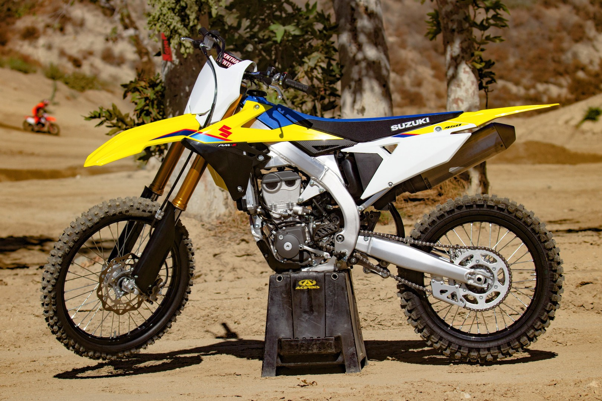

The Suzuki RM-Z450 was a single cylinder, four-stroke Enduro motorcycle produced by Suzuki between 2005 and 2019. The engine was a liquid cooled single cylinder, four-stroke. A 96.0mm bore x 62.1mm stroke result in a displacement of just 449.0 cubic centimeters. Fuel was supplied via a double overhead cams/twin cam (dohc).
The bike has a 5-speed transmission. Power was moderated via the Wet multi-plate type, manual release. It came with a 80/100-21 front tire and a 110/90-19 rear tire. Stopping was achieved via single disc in the front and a single disc in the rear. The front suspension was a inverted telescopic, coil spring, oil damped, adjustable damping force while the rear was equipped with a bfrc - link type, coil spring, oil damped, adjustable spring preload and damping force. The RM-Z450 was fitted with a 1.66 Gallon (6.30 Liters) fuel tank. The bike weighed just 223.77 pounds (101.5 Kg). The wheelbase was 58.27 inches (1480 mm) long.
